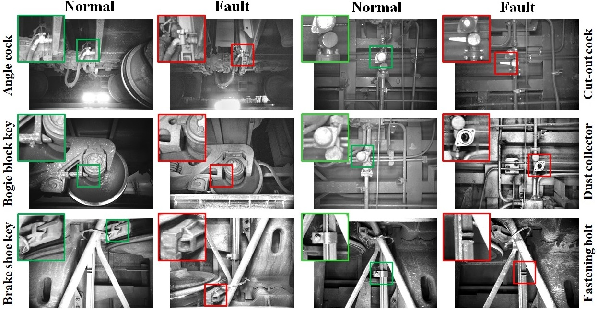
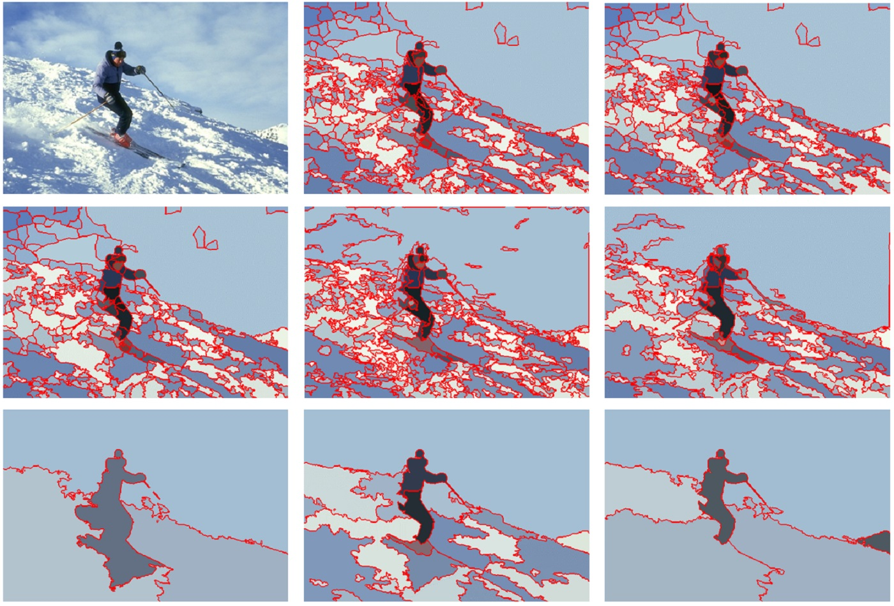
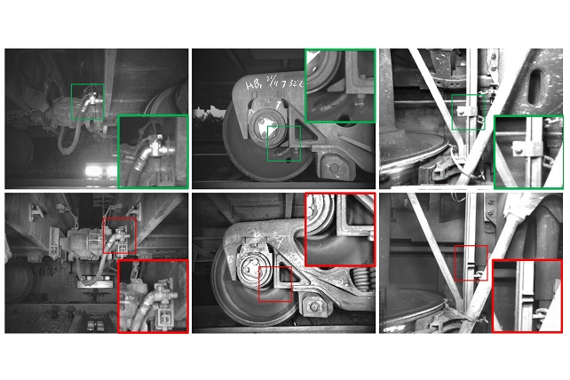
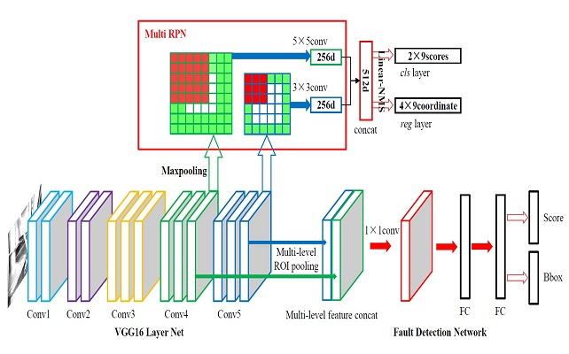
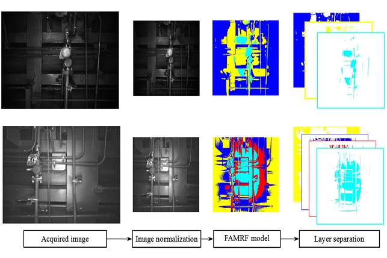

Selected Publications
A Unified Light Framework for Real-time Fault Detection of Freight Train Images
Accepted by IEEE Transactions on Industrial Informatics, 2021
Yang Zhang, Moyun Liu, Yang Yang, Yanwen Guo, Huiming Zhang

A unified light framework is designed to improve detection accuracy while supporting a real-time operation
with a low resource requirement. We firstly design a novel lightweight backbone (RFDNet) to improve the accuracy
and reduce computational cost. Then, we propose a multi region proposal network using multi-scale feature maps
generated from RFDNet to improve the detection performance. Finally, we present multi level position-sensitive
score maps and region of interest pooling to further improve accuracy with few redundant computations.
Affinity Fusion Graph-based Framework for Natural Image Segmentation
Accepted by IEEE Transactions on Multimedia, 2021
Yang Zhang, Moyun Liu, Jingwu He, Fei Pan, Yanwen Guo

The proposed framework combines adjacency-graphs and kernel spectral clustering based graphs (KSC-graphs) according
to a new definition named affinity nodes of multi-scale superpixels. These affinity nodes are selected based on
a better affiliation of superpixels, namely subspace-preserving representation which is generated by sparse
subspace clustering based on subspace pursuit. Then a KSC-graph is built via a novel kernel spectral clustering
to explore the nonlinear relationships among these affinity nodes. Moreover, an adjacency-graph at each scale is
constructed, which is further used to update the proposed KSC-graph at affinity nodes. The fusion graph is built
across different scales, and it is partitioned to obtain final segmentation result.
Real-time Vision Based System of Fault Detection for Freight Trains
IEEE Transactions on Instrumentation and Measurement, 2020, 69(7): 5274-5284
Yang Zhang, Moyun Liu, Yunian Chen, Hongjie Zhang, Yanwen Guo

Real-time vision based system of fault detection (RVBS-FD) for freight trains aims to complete routine maintenance
tasks efficiently for ensuring railway security. Recently, the rapid development of deep learning techniques
enables systems to provide a robust solution for the RVBS-FD of freight trains. We propose a CNN-based
detector called Light FTI-FDet for the RVBS-FD of freight train. The results on five typical fault
benchmarks indicate that our Light FTI-FDet achieves higher accuracy and fast speed with about 17% model size of the
well-known Faster R-CNN detector, substantially outperforming state-of-the-art methods.
A Unified Framework for Fault Detection of Freight Train Images Under Complex Environment
IEEE International Conference on Image Processing, 2018
Yang Zhang, Kai Lin, Huiming Zhang, Yanwen Guo, Guodong Sun

This paper proposes a novel unified framework for fault detection of the freight train images based on convolutional
neural network under complex environment. Firstly, the multi region proposal networks with a set
of prior bounding boxes are introduced to achieve high quality fault proposal generation. And then, we apply
a linear non-maximum suppression method to retain the most suitable anchor while removing redundant boxes.
Finally, a powerful multi-level region-of-interest pooling is proposed for proposal classification a
nd accurate detection.
Railway Equipment Detection Using Exact Height Function Shape Descriptor Based on Fast Adaptive Markov Random Field
Optical Engineering, 2018, 57(5): 053114
Guodong Sun, Yang Zhang, Hanbing Tang, Huiming Zhang, Moyun Liu and Daxing Zhao

This paper proposes a novel hierarchical feature matching model for the typical faults detection, which is a big
challenge in trouble of moving freight car detection system due to the constant color and complex
background of images. The proposed model divides fault detection into two stages: image segmentation and
parallel shape matching. In the process of segmentation, a fast adaptive Markov random field
segmentation algorithm is presented based on MRF combined with the image Pyramid model and affinity
propagation theory. In the process of shape matching, a novel shape descriptor named exact height function
is introduced on the basis of height function description.
Hierarchical Feature Matching of Fault Images in TFDS Based on Improved Markov Random Field and Exact Height Function
Master's Thesis, Hubei University of Technology (HBUT), 2017
Yang Zhang
According to the characteristics of TFDS image, based on hierarchical model and shape matching, hierarchical feature matching algorithm for fault images
in TFDS are proposed to achieve automatic recognition of air brake system malfunction, bogie block key missing, the loss of high wear synthetic
brake shoe and the absence of fastening bolts on brake beam. The proposed algorithm achieves high rate and good robustness, and it can be effectively
applied into the fault detection for TFDS images.